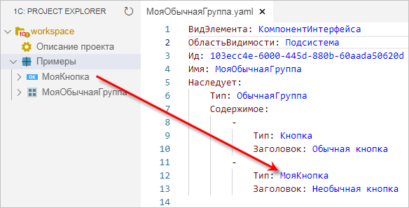
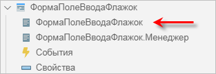
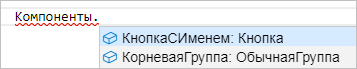
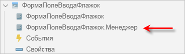

Типы встроенного языка, порождаемые элементом проекта вида «КомпонентИнтерфейса»
После того, как вы добавили в проект компонент интерфейса и дали ему имя, «1С:Кабинет сотрудника» создаст один тип встроенного языка. Имя этого типа совпадает с именем вашего компонента.
Например, если в проекте есть компонент с именем ФормаРаздела, то будет создан тип ФормаРаздела. В общем случае имя этого типа выглядит следующим образом: <ИмяКомпонента>.
Тип <ИмяКомпонента>
Тип <ИмяКомпонента> доступен на клиенте. Он содержит:
- свойства и методы базового компонента;
- собственные свойства компонента интерфейса,
- дополнительные свойства и методы, добавляемые «1С:Кабинетом сотрудника»:
- Компоненты
- Менеджер
- СобственнаяМодифицированность
- РассчитаннаяМодифицированность
- ОтслеживатьИзменениеДанных()
- Компоненты
- Это свойство предоставляет доступ ко всем именованным экземплярам компонентов, описанным в данном компоненте (подробнее)
- Менеджер
- Это свойство предоставляет доступ к модулю менеджера компонента (подробнее)
- СобственнаяМодифицированность
- Автоматически устанавливается в Истина, когда изменяются свойства самого компонента, у которых установлен признак СохраняемыеДанные
- РассчитаннаяМодифицированность
- Равен Истина при выполнении любого из следующих условий:
- Свойство СобственнаяМодифицированность равно Истина
- Свойство РасчитаннаяМодифицированность у дочернего компонента (у которого включено отслеживание изменения данных методом ОтслеживатьИзменениеДанных()) равно Истина
- Модифицированы данные сущности в форме элемента
- ОтслеживатьИзменениеДанных()
- Включает или выключает отслеживание изменения данных компонента, переданного первым параметром (А). Если отслеживание включено, то изменение свойства РассчитаннаяМодифицированность компонента А влияет на свойство РассчитаннаяМодифицированность этого компонента
Этот тип вы можете использовать при описании экземпляров компонентов, наряду со стандартными компонентами:

Этот тип вы можете использовать во встроенном языке при конструировании компонентов интерфейса. Пример, показанный выше, может выглядеть так:
пер МояОбычнаяГруппа = новый ОбычнаяГруппа(Владелец = этот)
пер ОбычнаяКнопка = новый Кнопка(Владелец = этот, Заголовок = "Обычная кнопка")
пер НеобычнаяКнопка = новый МояКнопка(Владелец = этот, Заголовок = "Необычная кнопка")
// Вариант 1
МояОбычнаяГруппа.Содержимое.Добавить(ОбычнаяКнопка)
МояОбычнаяГруппа.Содержимое.Добавить(НеобычнаяКнопка)
// Вариант 2
МояОбычнаяГруппа.Содержимое = [ОбычнаяКнопка, НеобычнаяКнопка]В конструкторе компонента интерфейса каждому свойству компонента (за небольшим исключением) соответствует параметр конструктора. Имя параметра совпадает с именем инициализируемого этим параметром свойства компонента.
Для компонентов интерфейса, добавленных в проект, в параметры конструктора включаются как собственные свойства, так и свойства, унаследованные от системного компонента.
Свойства системных компонентов, которые не включаются в конструктор:
- Для всех компонентов
- ЕстьНаведение
- ПолеВвода
- ТекстРедактирования
- ДиапазонВыделения
-
ВыборФайлов
- ВыбранныеФайлы
- ПроизвольныйСписок, Таблица
- ВыделенныйЭлемент
- ПроизвольныйЭлементСписка, СтрокаТаблицы
- ДанныеЭлемента
- ВсплывающийКомпонент
- Открыт
- ВсплывающееМеню
- Открыт
Свойства компонента интерфейса (добавленного в проект), которые не включаются в конструктор:
- СобственнаяМодифицированность
- РассчитаннаяМодифицированность
- Компоненты
- Менеджер
Модуль компонента
В проекте модуль, расширяющий тип <ИмяКомпонента>, называется модулем компонента. Он исполняется на клиенте.

В нем вы можете, например, обработать события, унаследованные от базового компонента, и собственные события, которые вы добавили компоненту.
МойМетод(этот)Тип <ИмяКомпонента>.Компоненты
Тип <ИмяКомпонента>.Компоненты — это служебный тип, который предоставляет доступ ко всем именованным экземплярам компонентов, описанным в данном компоненте.
Например, есть форма, состоящая из группы, в которой две кнопки: одна с именем, другая — без:
ВидЭлемента: КомпонентИнтерфейса
ОбластьВидимости: Подсистема
Ид: 653a4bf3-6988-47ed-9d81-a7d320cc867f
Имя: ФормаКомпоненты
Наследует:
Тип: Форма
Содержимое:
Тип: ОбычнаяГруппа
Имя: КорневаяГруппа
Содержимое:
-
Тип: Кнопка
Имя: КнопкаСИменем
Заголовок: Кнопка с именем
-
Тип: Кнопка
Заголовок: Кнопка без имени Для такой формы коллекция Компоненты будет содержать два элемента: КнопкаСИменем и КорневаяГрупппа:

Модуль менеджера компонента
Вы можете добавить компоненту интерфейса модуль менеджера.

Это серверный модуль, который доступен с клиента. Его можно вызвать из модуля компонента, используя свойство Менеджер.
В этом модуле вы можете реализовать серверные методы, которые необходимы для работы вашего компонента. Например, в модуле компонента:
метод ПослеСоздания()
ДанныеДляСписка = Менеджер.ДанныеДляСписка()
...
;В модуле менеджера компонента:
@проект
метод ДанныеДляСписка(): ПолнаяИнформация
...
возврат ПолнаяИнформация
;